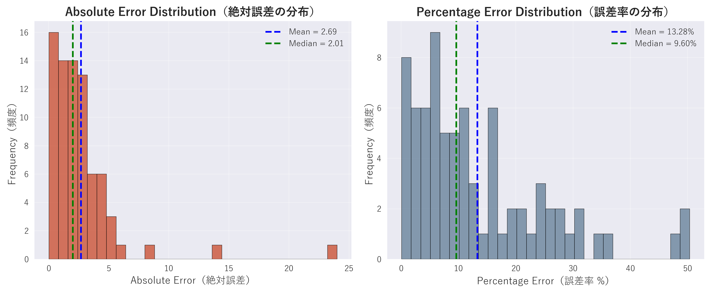
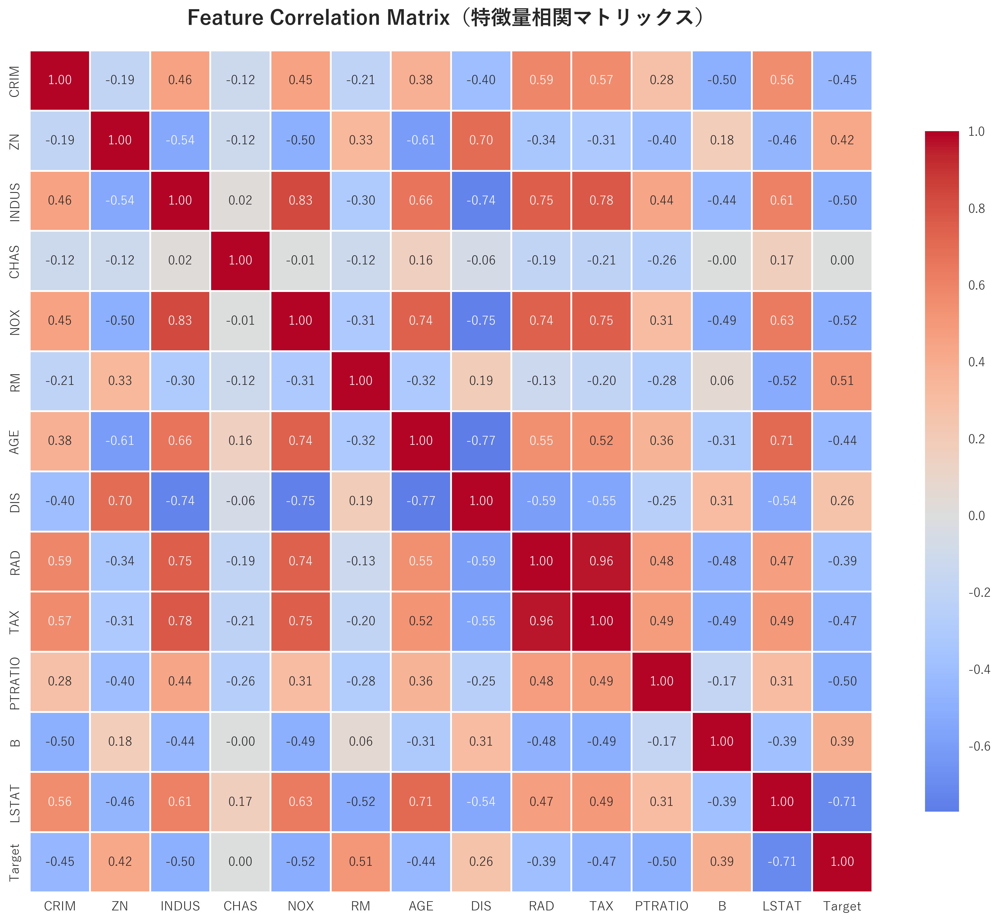
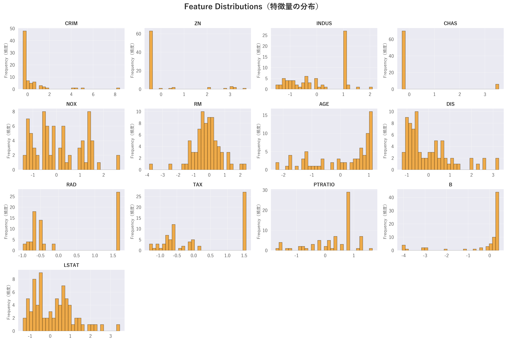

Boston Housing 価格予測 - 実験レポート
実験ID: 20251130_114704
生成日時: 2025年11月30日 16:46:58
評価指標
MSE
17.781933
RMSE
4.2168627
MAE
2.6850362
R² Score
0.7763
MAPE (%)
13.2816
実験設定
| 項目 | 値 |
|---|---|
| project.name | boston_housing |
| project.version | 2.0.0 |
| project.description | Boston住宅価格予測プロジェクト |
| data.raw_data_path | data/raw/housing.data |
| data.processed_data_path | data/processed/preprocessed.npz |
| data.train_ratio | 0.7 |
| data.val_ratio | 0.15 |
| data.test_ratio | 0.15 |
| data.preprocessing.scaler_type | standard |
| data.preprocessing.handle_outliers | False |
| data.preprocessing.outlier_threshold | 3.0 |
| model.type | simple_nn |
| model.input_dim | 13 |
| model.output_dim | 1 |
| model.simple_nn.hidden_size | 100 |
| model.simple_nn.dropout_rate | 0.2 |
| model.simple_nn.use_batch_norm | False |
| model.deep_nn.hidden_sizes | [128, 64, 32] |
| model.deep_nn.dropout_rate | 0.3 |
| model.deep_nn.use_batch_norm | True |
| model.deep_nn.activation | relu |
| model.residual_nn.hidden_sizes | [128, 128, 64] |
| model.residual_nn.dropout_rate | 0.2 |
| model.residual_nn.use_batch_norm | True |
| training.batch_size | 32 |
| training.epochs | 1000 |
| training.learning_rate | 0.001 |
| training.optimizer.type | adam |
| training.optimizer.weight_decay | 0.0001 |
| training.optimizer.sgd.momentum | 0.9 |
| training.optimizer.sgd.nesterov | True |
| training.loss.type | mse |
| training.loss.loss_scale | 0.001 |
| training.lr_scheduler.enabled | True |
| training.lr_scheduler.type | reduce_on_plateau |
| training.lr_scheduler.reduce_on_plateau.mode | min |
| training.lr_scheduler.reduce_on_plateau.factor | 0.5 |
| training.lr_scheduler.reduce_on_plateau.patience | 20 |
| training.lr_scheduler.reduce_on_plateau.min_lr | 1e-05 |
| training.lr_scheduler.step.step_size | 100 |
| training.lr_scheduler.step.gamma | 0.5 |
| training.early_stopping.enabled | True |
| training.early_stopping.patience | 50 |
| training.early_stopping.min_delta | 0.0001 |
| training.early_stopping.monitor | val_loss |
| training.checkpoint.save_best_only | True |
| training.checkpoint.save_last | True |
| training.checkpoint.monitor | val_loss |
| training.checkpoint.mode | min |
| evaluation.metrics | ['mse', 'rmse', 'mae', 'r2', 'mape'] |
| evaluation.batch_size | 64 |
| visualization.style | seaborn |
| visualization.figure_size | [10, 6] |
| visualization.dpi | 100 |
| visualization.save_formats | ['png', 'pdf'] |
| visualization.learning_curves.show_train | True |
| visualization.learning_curves.show_val | True |
| visualization.learning_curves.smoothing | 0.0 |
| visualization.prediction_plots.show_confidence_interval | True |
| visualization.prediction_plots.confidence_level | 0.95 |
| experiment.base_dir | experiments |
| experiment.id_format | %Y%m%d_%H%M%S |
| experiment.save_config | True |
| experiment.save_training_history | True |
| experiment.save_plots | True |
| experiment.save_report | True |
| system.seed | 42 |
| system.device | auto |
| system.num_workers | 0 |
| system.logging.level | INFO |
| system.logging.console_output | True |
| system.logging.file_output | True |
可視化結果
Error Distribution Test
Feature Correlation
Feature Distributions
Feature Importance